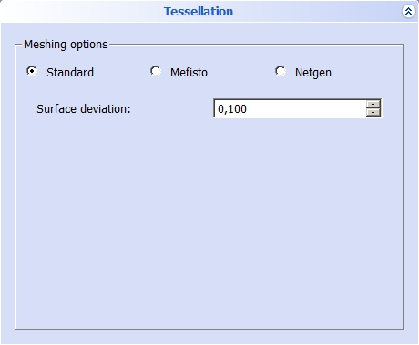
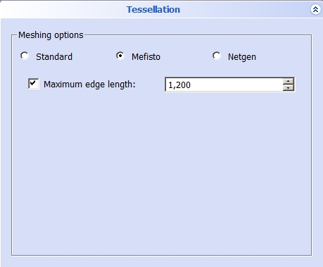
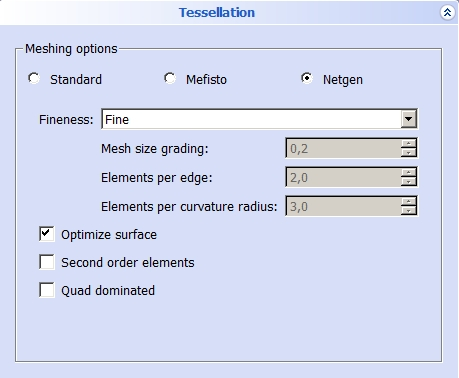

Mesh da forma
|
| Posizione nel menu
|
| Mesh → Crea Mesh da una forma...
|
| Ambiente
|
| Mesh
|
| Avvio veloce
|
| Nessuno
|
| Vedere anche
|
|
|
|
Introduzione
Questo comando crea un oggetto mesh da un oggetto forma
Uso
- Selezionare l'oggetto forma.
- Scegliere Mesh → Crea Mesh da una forma... dal menu principale.
- Un menu chiede di indicare quale mesher si vuole usare e di definire i valori appropriati per il mesher
Se si seleziona subito Mesh → Crea Mesh da una forma..., prima di selezionare una forma, si apre un ulteriore menu per scegliere la forma da trasformare in mesh
Mesher Standard

Deviazione della superficie: Se questo numero è più piccolo la maglia della griglia diventa più fine. Il valore minimo è 0,001.
Mesher Mefisto

Lunghezza massima dello spigolo: Se questo numero è più piccolo la maglia della griglia diventa più fine. Il valore minimo è 0,000.
Mesher Netgen

È possibile scegliere la finezza di mesh tra:
- Molto grossa
- Grossa
- Moderata
- Fine
- Molto fine
- Definita dall'utente
Per la Mesh "definita dall'utente" si possono impostare i seguenti parametri:
- Classe della dimensione mesh: Se il valore di questo parametro diminuisce, la maglia diventa più fine. Un valore nell'intervallo tra 0.1-10.
- Elementi per spigolo: Se il valore di questo parametro cresce, la maglia diventa più fine. Un valore nell'intervallo tra 0.1-10.
- Numero di elementi per il raggio di curvatura : Se il valore di questo parametro cresce, la maglia diventa più fine. Un valore nell'intervallo tra 0.1-10.
Per ogni opzione principale è anche possibile scegliere:
- Ottimizza superficie: Per ottimizzare la superficie della forma.
- Elementi di secondo ordine: Per generare gli elementi di secondo ordine.
- Dominato da quadrangoli: Per disporre le maglie come esaedri.
Limitazioni
Note
{kind=link}
{kind=link}
{kind=link}
{kind=link}
{kind=link}